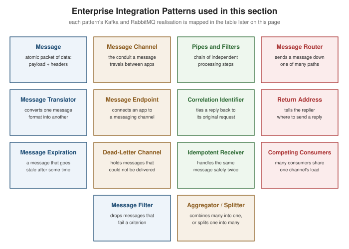

Messaging Models and Patterns
|
This content was generated with the assistance of AI and should be verified against the official documentation before being relied on in production. |
Every messaging system, however many broker-specific features it adds on top, is built from exactly two base delivery models: point-to-point and publish/subscribe. This page defines both, shows precisely how Kafka and RabbitMQ each realise them, and then works through request/reply — a pattern assembled on top of those two models, not a third model of its own. The second half of the page is a catalogue of the core Enterprise Integration Patterns that later pages in this section lean on by name, each with a short definition and a concrete Kafka/RabbitMQ realisation, so those later pages can say "this is a Competing Consumers setup" or "this queue is a Dead Letter Channel" without re-explaining the pattern every time. It assumes the shared vocabulary (producer, consumer, broker, topic, queue, offset) from Getting Started with Messaging.
The two base messaging models
Point-to-point: the work queue
In the point-to-point model, a message is sent to a single logical channel and consumed by exactly one receiver, even when several receivers are listening on that same channel. A pool of receivers listening on the same channel are called competing consumers: the messaging system hands each individual message to only one member of the pool, so adding more consumers increases throughput without any single message being processed twice. This is the shape of a task/work queue — a set of orders to fulfil, a set of images to resize — where every unit of work must be done once and the workers are interchangeable.
Publish/subscribe: fan-out
In the publish/subscribe model, a message is sent to a single logical channel and delivered to every independent subscriber of that channel — not one of them, all of them. This is the shape of an event notification — "an order was placed" — where several unrelated parts of a system (billing, fulfilment, analytics) each need to react to the same occurrence without knowing about each other. The two models are not mutually exclusive within a single deployment: it is entirely normal for one broker to carry both a work queue and a fan-out topic at the same time, for different channels.
Mapping the two models onto Kafka
Kafka’s only channel primitive is the topic, so both models are expressed through how consumer groups subscribe to it, not through two different kinds of channel:
-
Point-to-point (competing consumers): several consumer instances share one
group.id. Kafka assigns each of the topic’s partitions to exactly one member of that group, so each message is processed by exactly one consumer in the group — adding consumer instances (up to the partition count) increases parallelism. -
Publish/subscribe (fan-out): several consumer instances each use a different
group.id. Every group receives a full, independent copy of the topic’s messages, because Kafka’s fan-out boundary is the consumer group, not the individual consumer.
A single topic can be point-to-point for one downstream service and publish/subscribe across services at the
same time, purely as a function of how many distinct group.id values are subscribed to it — nothing about the
topic itself changes.
package com.example.messaging;
import java.util.Properties;
import org.apache.kafka.clients.producer.KafkaProducer;
import org.apache.kafka.clients.producer.ProducerRecord;
import org.apache.kafka.common.serialization.StringSerializer;
public class OrderProducer {
public static void main(String[] args) {
Properties props = new Properties();
props.put("bootstrap.servers", "localhost:9092");
props.put("key.serializer", StringSerializer.class.getName());
props.put("value.serializer", StringSerializer.class.getName());
try (KafkaProducer<String, String> producer = new KafkaProducer<>(props)) {
// every record keyed "order-42" lands on the same partition, in send order -- the mechanism
// a Competing Consumers or content-based Message Router realisation relies on
producer.send(new ProducerRecord<>("orders", "order-42", "{\"status\":\"placed\"}"));
}
}
}This example follows the producer configuration reference, in particular key.serializer and how a record’s key
drives partition assignment; see the
Kafka producer configuration reference.
Mapping the two models onto RabbitMQ
RabbitMQ separates "where a message is routed" (an exchange) from "where it is held for consumption" (a queue), so the two models correspond to two different exchange/binding shapes rather than to a consumer-side setting:
-
Point-to-point (competing consumers): a single queue with several consumers calling
basicConsumeagainst it. The broker distributes deliveries across the consumers round-robin (shaped by each consumer’sbasicQosprefetch count), so each message is handled by exactly one of them. -
Publish/subscribe (fan-out): a fanout or topic exchange bound to multiple, independent queues, each with its own consumer(s). The exchange copies every matching message onto every bound queue, so each queue’s consumer(s) see the full stream independently of the others.
package com.example.messaging;
import com.rabbitmq.client.Channel;
import com.rabbitmq.client.Connection;
import com.rabbitmq.client.ConnectionFactory;
public class OrderEventsFanout {
public static void main(String[] args) throws Exception {
ConnectionFactory factory = new ConnectionFactory();
factory.setHost("localhost");
try (Connection connection = factory.newConnection();
Channel channel = connection.createChannel()) {
channel.exchangeDeclare("order-events", "fanout", true);
// billing and analytics each get an independent copy of every order event
channel.queueDeclare("order-events.billing", true, false, false, null);
channel.queueBind("order-events.billing", "order-events", "");
channel.queueDeclare("order-events.analytics", true, false, false, null);
channel.queueBind("order-events.analytics", "order-events", "");
}
}
}This example follows the fanout-exchange publish/subscribe tutorial; see the RabbitMQ Java client tutorial 3 — Publish/Subscribe. The competing-consumers, single-queue shape is the subject of RabbitMQ Java client tutorial 2 — Work Queues.
Request/reply: a pattern, not a third model
It is tempting to think of request/reply as a third base model, alongside point-to-point and publish/subscribe, because it feels like the synchronous call/return most application code is written against. It is not: a request/reply exchange is simply two point-to-point (or, less commonly, two publish/subscribe) sends, glued together by two extra pieces of data the requester attaches to the outgoing message:
-
a return address — which channel the reply should be sent to; and
-
a correlation identifier — an opaque value the requester generates, echoed back on the reply, so a requester handling several concurrent requests can match each reply to the request that produced it.
Both brokers realise this identically in shape, even though the mechanism differs: Kafka has no built-in concept
of "this record is a reply to that record", so the return address and correlation id both travel as ordinary
headers on the record; RabbitMQ has first-class message properties for exactly this — reply_to and
correlation_id — understood natively by every AMQP 0-9-1 client without any application-level convention
needed. Both are covered in detail, with their realisation table rows, under Correlation Identifier and Return
Address in the catalogue below.
package com.example.messaging;
import com.rabbitmq.client.AMQP.BasicProperties;
import com.rabbitmq.client.Channel;
import java.util.UUID;
public class PricingRequestClient {
public String sendPricingRequest(Channel channel, String replyQueue, String requestBody) throws Exception {
String correlationId = UUID.randomUUID().toString();
BasicProperties props = new BasicProperties.Builder()
.correlationId(correlationId)
.replyTo(replyQueue)
.build();
channel.basicPublish("", "pricing.requests", props, requestBody.getBytes());
return correlationId; // the caller matches replies arriving on replyQueue against this id
}
}This example follows the RPC pattern’s reply_to/correlation_id usage; see the
RabbitMQ Java client tutorial 6 — RPC.
The Enterprise Integration Patterns catalogue
The patterns below are drawn from the Enterprise Integration Patterns messaging catalogue — a vendor-neutral vocabulary for describing messaging systems that predates both Kafka and RabbitMQ and applies equally to either. Each pattern gets a short definition here, plus a table row mapping it to the concrete mechanism that realises it on each broker; later pages in this section reference these patterns by name rather than re-explaining them.
Structure: message, message channel, pipes and filters
A Message is the atomic unit of data moved through a messaging system: a payload plus metadata (headers, routing information, a timestamp) that describes it, wrapping application data for transmission without the sender needing to know anything about how the receiver will consume it.
A Message Channel is the logical conduit a message travels on between a sender and a receiver — the thing an application actually connects to; the sender and receiver never communicate directly, only through the channel.
Pipes and Filters is the pattern of dividing one large processing task into a sequence of smaller, independent filters, each doing one transformation step and connected to the next by a pipe (a message channel) — so stages can be added, removed, or reordered without touching the others.
Routing and transformation: message router, message translator, message endpoint
A Message Router consumes a message from one channel and, based on a set of conditions evaluated against its content or metadata, sends it on to one of several possible destination channels — decoupling the decision of where a message goes from the processing steps that come before and after it.
A Message Translator converts a message from one data format or structure into another, so that systems which disagree on representation (a legacy XML payload, a new JSON schema) can still exchange messages without either side being rewritten to match the other.
A Message Endpoint is the piece of application code that connects an application to a messaging channel — the client-side object that actually sends or receives, wrapping the broker’s native API behind whatever the application’s own code expects to call.
Request/reply plumbing: correlation identifier, return address
A Correlation Identifier is a unique value carried on a reply message that ties it back to the specific request message that caused it, which a requester needs the moment it can have more than one request outstanding at once — without it, a reply arriving out of order is unidentifiable.
A Return Address is information the requester includes on its own outgoing request message telling the replier which channel to send the reply to, so the replier does not need any out-of-band configuration naming where every possible requester listens.
Reliability and lifecycle: message expiration, dead-letter channel, idempotent receiver
Message Expiration is a validity window attached to a message (or the channel that holds it) after which the message is no longer worth delivering and should be discarded rather than processed as if it were still current — avoiding stale data being acted on long after the event that produced it stopped mattering.
A Dead Letter Channel is where a messaging system moves a message it has determined it cannot deliver — after repeated processing failures, after it expired, or because the destination is otherwise unable to accept it — so the message is neither silently dropped nor left blocking the channel it came from.
An Idempotent Receiver is a receiver designed so that processing the same message more than once produces the same result as processing it exactly once, which matters because most messaging systems only promise at-least-once delivery (see Getting Started with Messaging) — duplicates are a normal, expected occurrence, not an edge case.
Throughput and content shaping: competing consumers, message filter, aggregator/splitter
Competing Consumers is multiple consumers listening on a single channel so the messaging system distributes the channel’s messages across them, parallelising consumption of a single logical stream of work — the point-to-point model’s defining pattern, covered concretely above.
A Message Filter is a specialised Message Router with a single output: it eliminates messages that fail a criterion instead of choosing among several destinations, so downstream consumers only ever see messages they actually need to handle.
An Aggregator is a stateful component that receives a stream of related messages, correlates them, and holds each one until a complete set has arrived, at which point it publishes a single combined message derived from them. A Splitter does the reverse: it breaks one composite message into a series of individual messages, each carrying data about one item from the original.
| Pattern | Kafka realisation | RabbitMQ realisation |
|---|---|---|
Message |
A |
An AMQP 0-9-1 message: a byte-array body plus |
Message Channel |
A topic — the named, partitioned, replicated log every producer/consumer channel maps onto. |
A queue — the actual holding point messages sit on, reached indirectly through an exchange and a binding. |
Pipes and Filters |
A chain of topics, each with its own consumer group/processing stage (hand-rolled, or a Kafka Streams topology). |
A chain of queues linked by intermediate exchanges, each stage consuming one queue and publishing onto the next exchange. |
Message Router |
A consumer that inspects a key/header/payload and produces onto different downstream topics, or
|
A topic or headers exchange doing the routing declaratively at the broker, via routing-key patterns or
|
Message Translator |
A Kafka Streams |
No in-broker transform primitive; an intermediary consumer/publisher (or a Shovel) converts formats between queues. |
Message Endpoint |
|
The AMQP 0-9-1 client channel ( |
Correlation Identifier |
An application-set |
The standard |
Return Address |
An application-set |
The standard |
Message Expiration |
Topic-level retention ( |
A genuine per-message TTL (the |
Dead-Letter Channel |
No broker-native DLQ; the consuming application (or Spring Kafka’s |
A native dead-letter exchange (DLX), wired through the |
Idempotent Receiver |
An idempotent producer ( |
No broker-native deduplication; redelivery after a |
Competing Consumers |
Several consumer instances sharing one |
Several consumers calling |
Message Filter |
A consumer-side predicate ( |
A topic exchange’s routing-key pattern binding, or a headers exchange’s |
Aggregator / Splitter |
|
No broker-native primitive for either; both are implemented in the consuming application (e.g. a Spring Integration aggregator), consuming one queue and publishing one-to-many or many-to-one onto the next. |
Two rows of this table — Correlation Identifier and Return Address — have a Spring-specific realisation worth
seeing once concretely: ReplyingKafkaTemplate sets both headers automatically and matches the reply back to
the caller’s future.
package com.example.messaging;
import java.time.Duration;
import java.util.concurrent.ExecutionException;
import org.apache.kafka.clients.producer.ProducerRecord;
import org.springframework.beans.factory.annotation.Autowired;
import org.springframework.kafka.requestreply.ReplyingKafkaTemplate;
import org.springframework.kafka.requestreply.RequestReplyFuture;
import org.springframework.stereotype.Service;
@Service
public class PricingClient {
@Autowired
private ReplyingKafkaTemplate<String, String, String> replyingTemplate;
public String requestPrice(String sku) throws ExecutionException, InterruptedException {
ProducerRecord<String, String> record = new ProducerRecord<>("pricing-requests", sku);
RequestReplyFuture<String, String, String> future =
replyingTemplate.sendAndReceive(record, Duration.ofSeconds(5));
// the template sets KafkaHeaders.CORRELATION_ID and KafkaHeaders.REPLY_TOPIC on the outbound
// record, and matches the reply carrying the same correlation id back to this future
return future.get().value();
}
}This example follows the ReplyingKafkaTemplate request/reply semantics described under "Sending Messages"; see
Spring for Apache
Kafka reference — Sending Messages, Request/Reply Semantics. The Kafka consumer-side plumbing this
builds on — @KafkaListener, manual/batch acknowledgement, DefaultErrorHandler — is covered in full on
Messaging with Kafka rather than repeated here.
Visualizing the catalogue and a content-based router

A content-based router is the most common concrete shape a Message Router takes: one inbound channel, a router that inspects a field in the message (here, an order’s region), and one outbound channel per possible value, each with its own consumer. On Kafka this is a consumer producing onto per-region topics (or a topic exchange’s routing-key bindings doing the same job declaratively on RabbitMQ, as the table above shows):